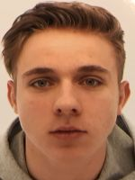

| Biljart Lounge | | Tramstraat 59, 3800 St Truiden | 011884888 | hendrik.destaelen@skynet.be |
A  Kempenaers Gert
klasse: 1
26-05-1973  Vandevoort Kevin
klasse: 1
23-04-1987  Vanoppen Kobe
klasse: 1
30-06-1999 |
B  Charot Pascal
klasse: 1
05-02-1976  Dorissen Robby
klasse: 2
04-07-1978  Lenaerts Georges
klasse: 2
05-06-1966 |
C  De Staelen Hendrik
klasse: 2
19-09-1962  Ilsbroekx Wim
klasse: 3
27-07-1969  Lacroix Jonas
klasse: 2
13-03-1992  Leclercq Georges
klasse: 2
03-12-1970  Van Den Broeck Kevin
klasse: 1
02-11-1982 |
D Bollen Erik
klasse: 3
16-08-1964  Dirix Luc
klasse: 3
03-05-1975 Jamoul Wesley
klasse: 3
05-10-1983  Schurmans Kristof
klasse: 3
11-04-1983 Vaes Jean-Pierre
klasse: 3
23-11-1961 |
E  Hermans Kristof
klasse: 3
04-04-1989 Storms Krishna
klasse: 3
29-12-1993  Vanmechelen Tilly
klasse: 3
28-12-1951 Welkenhuysen Danny
klasse: 3
06-07-1963 |
F Gijsens Johan
klasse: 3
03-11-1966  Van Gucht Filip
klasse: 3
12-04-1972  Vandermeulen Patrick
klasse: 3
11-03-1963 |
Reserven Van Oostveldt Jelle
klasse: 3
20-05-1992  Vanoirbeek Tom
klasse: 3
18-10-1982  Vanvuchelen Kristof
klasse: 3
03-11-1975 |
| Buckingham | | Rozenberg 157, 2400 Mol | 014315827 | interclub@buckingham.be |
A  De Wit Matthias
klasse: 2
21-06-1994 Hooyberghs Toon
klasse: 1
18-11-2000  Hulsmans Ruddy
klasse: 1
27-03-1971 Wuyts Joeri
klasse: 2
23-08-1980 |
B Douwen Eddy
klasse: 2
29-12-1956  Kaerts Bjorn
klasse: 1
07-05-1977  Rochanat Treepetch
klasse: 1
20-02-1978  T'Syen Chris
klasse: 1
20-12-1972 |
C  Goossens Jan
klasse: 2
10-04-1982 Hamblok Martijn
klasse: 1
12-04-1990  Loos Davy
klasse: 2
16-04-1980  Van Acoleyen Kris
klasse: 2
05-01-1979  Verachtert Didier
klasse: 2
04-09-1993  Vermeyen Roel
klasse: 2
30-05-1992 |
D Lommelen Pascal
klasse: 3
22-02-1970 Snyers Tom
klasse: 1
18-07-1981  Vansteenkiste Peter
klasse: 2
09-01-1971  Verherstraeten Matthijs
klasse: 1
19-03-2003 Wullems Marc
klasse: 2
13-03-1974 |
E  Boets Stefaan
klasse: 3
29-07-1975  Hermans Niels
klasse: 3
21-01-1986  Hooyberghs Kris
klasse: 2
11-03-1967  Voordeckers Davy
klasse: 3
16-01-1980 |
F Berkmans Peter
klasse: 3
28-04-1971  Boons Niklaas
klasse: 3
08-10-1963  Conjaerts Danny
klasse: 3
03-06-1971 Theuwissen Peter
klasse: 3
21-11-1968 |
G  Bijnens Jan
klasse: 3
09-01-1978 Huysmans Jan
klasse: 2
18-08-1964  Leurs Manuel
klasse: 3
09-08-1974 Soffers Alain
klasse: 3
19-09-1964 |
Reserven  Meynen Ronny
klasse: 3
26-03-1971  Oeyen Don
klasse: 3
16-06-1995  Verherstraeten Jan
klasse: 3
02-05-1969  Willekens Andre
klasse: 3
19-09-1952 |
| De Kreeft | | Bilzersteenweg 2, 3730 Hoeselt | 089492877 | madeleine@russell-nv.com |
A  Dethier Pierre
klasse: 1
23-06-1973  Reekmans Rudy
klasse: 2
19-09-1966  Ruyters Theo
klasse: 1
01-10-1980 |
B Stoffels Robby
klasse: 2
20-12-1967  Thompson Rik
klasse: 2
01-08-1964 |
C  Birtles Cymon
klasse: 2
19-09-1972 Pemmerl Xavier
klasse: 2
03-01-1968  Wilhelmy Frederic
klasse: 2
25-01-1972 |
D  Dingelstadt Vincent
klasse: 2
27-12-1978  Meunier Marc
klasse: 3
03-07-1972 |
E  Kouklous Dimitrios
klasse: 2
06-12-2000  Van Der Hauwaert Danek
klasse: 2
08-07-1981  Van der Meeren Mathias
klasse: 2
27-09-2005 |
F  Letecheur Frederic
klasse: 2
08-06-1966  Slegers Marc
klasse: 3
14-01-1965  Warnier Serge
klasse: 3
24-10-1961 |
G  Roox Martijn
klasse: 3
13-08-1991  Vandebosch Tristan
klasse: 3
13-05-2002 |
H  Deborggraeve Michel
klasse: 2
13-09-1966 Olaerts Jean
klasse: 3
24-04-1963  Wagemans Stefan
klasse: 2
01-04-1972  Withofs Luc
klasse: 3
04-02-1970 |
I Geraci Salvatore
klasse: 3
22-12-1981 Lycops Dirk
klasse: 2
01-10-1973  Van Den Wyngaert Gaetan
klasse: 3
15-09-1976 |
J  Boxus Stephane
klasse: 3
09-09-1968  Chaumont Pascal
klasse: 2
18-07-1966  Cuypers Philippe
klasse: 3
23-05-1970  Vassallo Bruno
klasse: 3
26-08-1985 |
K Vanhove Jan
klasse: 3
31-01-1954  Vanhove Jeffry
klasse: 3
10-01-1989 |
L  Brabants Leo
klasse: 3
10-08-1955 Kennes Nikolaas
klasse: 3
08-07-1961  Willems Wilfried
klasse: 3
18-03-1958 |
M  Mouha Joey
klasse: 3
20-12-1977  Stassen Johan
klasse: 3
11-08-1968 |
Reserven  Bielen Frank
klasse: 3
29-03-1968 Caers Axel
klasse: 3
24-06-1976  Ceulemans Gino
klasse: 3
28-06-1964  Croymans Henri
klasse: 3
12-09-1947 Gelade Philippe
klasse: 3
23-08-1996 Gustin Thierry
klasse: 3
21-03-1968  Jans Nico
klasse: 3
11-06-1985  Lefevre Fernand
klasse: 3
26-05-1971  Overath Didier
klasse: 3
02-03-1960 Pemmerl Kevin
klasse: 3
07-01-1998  Scheunders Yvo
klasse: 3
19-12-1964  Vandeweyer Johan
klasse: 3
31-08-1963  Vanspauwen Yannick
klasse: 3
10-04-1992  Vrancken Marc
klasse: 3
06-12-1966 Willemsen Johnny
klasse: 3
16-12-1969 |
| De Maxx | | Groenstraat 9, 3910 Pelt | 011524246 | wendyjans170@gmail.com |
A Brepoels Erwin
klasse: 2
18-06-1973  Schrijvers Peter
klasse: 1
07-05-1970 |
B Gijsen Jimmy
klasse: 2
14-07-1980 Janssen Maarten
klasse: 2
03-02-1986  Vanbaelen Eddy
klasse: 2
09-02-1969 |
C  Jans Wendy
klasse: 1
14-06-1983  Luining Nicky
klasse: 2
08-08-1965  Severens Noel
klasse: 2
16-08-1967 |
D  Bloemen Lennert
klasse: 2
26-08-1996 Ceulen Bart
klasse: 3
12-09-1985  Davids Patric
klasse: 3
01-11-1963  Van Vyve Yves
klasse: 3
13-07-1982 |
E  Gysen Yvo
klasse: 3
04-03-1965  Kenens Carlo
klasse: 2
05-12-1957 Lipkens Luc
klasse: 3
25-06-1970  Schoemans Danny
klasse: 3
14-12-1971  Senders Wiljan
klasse: 2
12-03-1969 |
F  Elsen Ivan
klasse: 3
28-06-1973 Verfaillie Dave
klasse: 3
20-04-1980 Verfaillie Thian
klasse: 3
26-06-2008 |
Reserven Silva Rosso Miguel
klasse: 3
24-04-2000  Smeets Stijn
klasse: 3
09-08-1978 Tilmans Geert
klasse: 3
05-11-1979  Uyttenbroeck Michel
klasse: 3
30-03-1949 van der Zwan Maarten
klasse: 3
21-06-1970  Van Oppen Raf
klasse: 3
02-05-1971 Vermaerke Godfried
klasse: 3
27-03-1954 |
| Happy Snooker | | Oude Luikerbaan 81 A, 3500 Hasselt | 011275092 | jans.danny@live.be |
A  Hoes Yorrit
klasse: 1
30-08-2004  Moermans Johny
klasse: 1
29-09-1969 Pauly Davy
klasse: 1
11-02-1986 |
B Convens Robby
klasse: 1
28-11-1979 Mangelschots Rudi
klasse: 2
19-02-1965  Smeulders Erik
klasse: 1
07-10-1972 |
C Cornelis Jarne
klasse: 2
20-12-2002 Debay Kevin
klasse: 1
29-06-1978  Pape Christophe
klasse: 2
11-02-1980 |
D  Hannes Tom
klasse: 2
21-11-1972 Hermans Christoph
klasse: 2
08-07-1980  Nelissen Peter
klasse: 2
06-03-1970  Slechten Jean-Paul
klasse: 2
10-09-1966 |
E Jans Danny
klasse: 2
21-10-1972  Reniers Kris
klasse: 2
08-11-1972 Simons Peter
klasse: 3
11-04-1967  Vanspauwen Eddy
klasse: 3
22-04-1969 |
F  De Bruyn Jan
klasse: 2
08-05-1965  Ignoul Frank
klasse: 3
31-07-1971  Thoelen Carlo
klasse: 2
15-12-1981 |
G  Bammens Didier
klasse: 3
06-09-1990  Roost Jan
klasse: 3
31-10-1980  Russell Jonathan
klasse: 2
31-08-1977  Schepers Bart
klasse: 3
19-01-1978 |
H  Lafosse Gert
klasse: 3
13-05-1973  Maes Kristof
klasse: 3
18-12-1980 Nelissen Frank
klasse: 3
14-12-1972 |
I  Adriaens Johny
klasse: 3
24-01-1966  Aerts Luc
klasse: 3
11-02-1968  Vanwalleghem Stany
klasse: 3
12-02-1968 |
J Kleynen Youri
klasse: 3
30-07-1992  Smeets Risto
klasse: 3
09-08-2001 Vermeulen Maarten
klasse: 3
06-11-1988 |
K Broux Johan
klasse: 3
28-02-1975 Collart Olivier
klasse: 3
09-10-1969  Collart Sander
klasse: 3
20-11-1996  Timmermans Yves
klasse: 3
29-12-1976 |
L  Ferket Michel
klasse: 3
22-12-1960 Pieters Bart
klasse: 3
13-11-1972 Triekels Kurt
klasse: 3
12-09-1972 Van Helvert Mark
klasse: 3
20-08-1976 |
M  Appeltans Silvie
klasse: 3
20-04-1980  Mrak Nico
klasse: 3
06-12-1965 Thewis Marc
klasse: 3
03-05-1960 Vrancken Patrick
klasse: 3
30-05-1970 |
N Aerts Robert
klasse: 3
27-07-1955  Clemens Damiaan
klasse: 3
03-12-1956 Reck Jean-Pierre
klasse: 3
03-02-1955 Swerts Tony
klasse: 3
04-01-1957 |
O Lismont Wilfried
klasse: 3
27-10-1975  Ramaekers Ronny
klasse: 3
10-03-1960 Smullenberghs Kristof
klasse: 3
26-12-1981 |
P  Schepers Danny
klasse: 3
07-06-1968  Van Herpen Petrus
klasse: 3
30-10-1963  Vandeweyer Seppe
klasse: 3
24-10-2001 |
Q Lismont Wilfried
klasse: 3
27-10-1975 Ramaekers Ronny
klasse: 3
10-03-1960 Smullenberghs Kristof
klasse: 3
26-12-1981 |
Reserven Broeders Tim
klasse: 3
24-06-1988  Byloos Olivier
klasse: 3
22-03-1973 Caubergs Joris
klasse: 3
16-07-1984 De Bruyn Dean
klasse: 3
10-01-1996  Fransens Roger
klasse: 3
01-11-1957  Hanno Julien
klasse: 3
22-09-1961  Jamro Eddy
klasse: 3
19-12-1950 Keyen David
klasse: 3
09-08-1983  Lambrechts Marc
klasse: 3
03-07-1954  Lenaerts Kevin
klasse: 3
02-04-1987  Manshoven Filip
klasse: 3
24-10-1966  Pirard Alex
klasse: 3
30-09-1969  Ramaekers Tristan
klasse: 3
24-11-1991 Rogiers Kevin
klasse: 3
16-04-1983  Vlaeyen Mark
klasse: 3
19-10-1989 |
| NRG | | Diestersesteenweg 71, 3583 Paal | 011428993 | ronnie.dereydt@telenet.be |
A  De L'arbre Marc
klasse: 2
21-12-1973  Marien Guy
klasse: 2
08-06-1970  Wouters Tom
klasse: 2
13-06-1973 |
B  Derden Derk
klasse: 1
26-06-1969  Exelmans Marnix
klasse: 3
21-08-1968  Van Camp Jean-Pierre
klasse: 2
07-07-1963 |
C  Beckers Steff
klasse: 3
10-02-1995  Lecocq Yoshi
klasse: 3
21-05-1986 Vitali Marco
klasse: 2
16-03-1993 |
D  Brems Danny
klasse: 3
03-07-1962 Marting Michel
klasse: 3
02-06-1987 Wijns Ronny
klasse: 3
22-05-1966 |
E  Daniels Willy
klasse: 2
21-07-1965 De Reydt Ronnie
klasse: 3
17-10-1960  Moors Danny
klasse: 3
18-02-1972 |
F Bekkers Ronny
klasse: 3
02-08-1953  Eens Melissa
klasse: 3
27-12-1986  Foets Rony
klasse: 3
23-07-1957  Verhoeven Donny
klasse: 3
02-10-1979 Verrienti Salvatore
klasse: 3
27-11-1945 |
G De Reydt Ronnie
klasse: 3
17-10-1960 Eens Melissa
klasse: 3
27-12-1986 Verhoeven Donny
klasse: 3
02-10-1979 Vitali Marco
klasse: 2
16-03-1993 |
H Bekkers Ronny
klasse: 3
02-08-1953 Brems Danny
klasse: 3
03-07-1962 Derden Derk
klasse: 1
26-06-1969 |
Reserven  Belmans Thomas
klasse: 3
29-06-1984  Geukens Marnik
klasse: 3
01-08-1970  Ritzen Eddy
klasse: 3
28-05-1956  Vleugels Andy
klasse: 3
25-03-1972 |
| Re-Spot | | Heuvenstraat 116, 3520 Zonhoven | 011918963 | info@respot.be |
A Cornitensis Rik
klasse: 1
19-01-1969  Driesen Frank
klasse: 1
23-06-1972  Duchateau Patrick
klasse: 1
22-01-1982 |
B  Hulsbosch Michael
klasse: 1
25-02-1999  Jansen Nick
klasse: 1
08-01-2000  Monard Andries
klasse: 1
21-06-1991 |
C Poilvache Bjorn
klasse: 1
11-09-1979  Sokolowski Sybren
klasse: 1
22-04-2001 Wouters Mike
klasse: 1
10-12-1977 |
D  Bartholome David
klasse: 2
03-01-1974  Daniels Wim
klasse: 2
08-07-1979  Melotte Koen
klasse: 2
12-06-1979 |
E  Mertens Stef
klasse: 3
09-04-1992  Schalleij Wim
klasse: 3
23-10-1954 |
F  Achten Wesley
klasse: 2
05-11-1981 Leenaers Ghislain
klasse: 2
21-07-1965 |
G  Paessens Peter
klasse: 2
30-11-1970  Stijnen Johan
klasse: 2
13-10-1970  Veltens Steven
klasse: 3
28-08-1973 |
H  Thys Kenneth
klasse: 2
01-03-2002 Vanhees Alan
klasse: 2
07-11-1980 |
I Croughs Glenn
klasse: 3
21-02-1991  Roosen Wim
klasse: 3
27-07-1989  Sijbers Joeri
klasse: 2
07-03-1975 |
J  Schepers Geert
klasse: 3
12-01-1981  Verhaeren Wim
klasse: 3
20-08-1962 |
K  De Roover David
klasse: 3
25-12-1977 Pieters Eddy
klasse: 3
22-06-1962 |
L  Monette Frank
klasse: 3
09-03-1969  Vanoppen Maurits
klasse: 3
22-03-1950 |
M  Aerts Johan
klasse: 3
18-06-1960  Mols Dominick
klasse: 3
02-09-1963 |
N  Prieto-Rojas Gregory
klasse: 3
24-09-1980 Tuand Eros
klasse: 3
11-05-1988 |
O Clemens Danny
klasse: 3
25-01-1972 Van Gucht Paul
klasse: 3
13-01-1956 |
P Buvens Kris
klasse: 3
30-05-1967 Devos Jan
klasse: 3
03-10-1969 Vanluyten Filip
klasse: 3
22-10-1969 |
Q  Moureau Vincent
klasse: 3
15-02-1970  Segers Frank
klasse: 3
08-07-1959 |
R  Melis Pasquale
klasse: 3
10-05-1968  Swennen Johan
klasse: 3
25-08-1958 |
S  Eerdekens Ann
klasse: 3
19-09-1948  Thans Steve
klasse: 3
01-03-1977 Wautraets Jamy
klasse: 3
04-04-2007 |
T Achten Wesley
klasse: 2
05-11-1981 Poilvache Bjorn
klasse: 1
11-09-1979 |
U Mertens Stef
klasse: 3
09-04-1992 Schalleij Wim
klasse: 3
23-10-1954 |
V Boon Elise
klasse: 3
18-04-1998  Louwette Stefan
klasse: 3
31-12-1965 |
W Daniels Wim
klasse: 2
08-07-1979 Monard Andries
klasse: 1
21-06-1991 Thys Kenneth
klasse: 2
01-03-2002 |
Reserven  Adriaens Peter
klasse: 3
27-10-1963  Bonneux Kurt
klasse: 3
11-01-1978 Broux Stefan
klasse: 3
01-02-1976  Cardinaels Jos
klasse: 3
20-07-1951 Carroccio Maurizio
klasse: 3
29-09-1977  Cornelissen Roby
klasse: 3
18-10-1974 Courtois Yves
klasse: 3
06-07-1967  Gacoms Peter
klasse: 3
09-06-1970  Geladi Gert
klasse: 3
23-10-1969 Huybrechts Rudy
klasse: 3
19-07-1957 Ickx Kenji
klasse: 3
18-04-2005  Lenaers Nico
klasse: 3
06-12-1965  Mangelschots Bjorn
klasse: 3
04-07-1976  Mannaerts Bert
klasse: 3
06-11-1989  Mathei Bart
klasse: 3
23-01-1977  Mattens Johan
klasse: 3
29-12-1959  Nys Jean Paul
klasse: 3
18-06-1978  Perrone Vito
klasse: 3
02-03-1950 Philippart Jozef
klasse: 3
23-07-1957 Sokolowski Edwin
klasse: 3
07-04-1974  Stevens Marc
klasse: 3
10-09-1959  Strouven Wouter
klasse: 3
21-06-1983 Swart Jerry
klasse: 3
07-09-1971  Thys Jo
klasse: 3
27-04-1982  Thys Steven
klasse: 3
28-01-1978 Tournel Bart
klasse: 3
06-11-1967 Weygers Erwin
klasse: 3
03-03-1974  Willems Raf
klasse: 3
21-07-1979 |
| Riley Inn | | Weg naar As 93, 3600 Genk | 089350476 | robinlatet@gmail.com |
A  Marien Christoph
klasse: 1
13-05-1973  Smeulders Ivo
klasse: 1
01-12-1974 Van Hove - Speltincx Kevin
klasse: 1
15-10-1983 |
B  Bokken Mathijs
klasse: 1
09-06-1988  Hesemans Benny
klasse: 1
30-10-1968 Mercurio Claudio
klasse: 1
13-09-1985  Poelmans Rudy
klasse: 1
19-09-1965 |
C  Frans Laurent
klasse: 3
22-10-1966 Peters Alain
klasse: 3
22-11-1961 Vuurstaek Rudi
klasse: 2
02-03-1958 |
D Michailidis Efstatios
klasse: 3
11-11-1964  Peters Rudi
klasse: 2
20-03-1975  Vario Giovanni
klasse: 3
15-02-1972 |
E Cams Peter
klasse: 3
05-10-1970  Devos Eddy
klasse: 3
23-12-1956 Zargar Salim
klasse: 3
01-06-1993 |
F  Aerts Kris
klasse: 3
20-09-1972  Broux Marcel
klasse: 3
04-08-1951  Deveux Jan
klasse: 3
27-11-1974 |
G Donkers Freddy
klasse: 3
20-01-1957  Schots Romain
klasse: 3
26-04-1951 Vliegen Matt
klasse: 3
15-11-1983 |
H  Follon Steve
klasse: 3
09-09-1984  Panis Dominic
klasse: 3
07-12-1981 Rutkowski Peter
klasse: 3
26-10-1978 |
I  Barone Ken
klasse: 3
30-09-1986  Stinkens Sander
klasse: 3
18-09-1990  Van Dyck Dimitri
klasse: 3
20-03-1986 |
J  De Cola Alfonso
klasse: 3
08-09-1970  Latet Robin
klasse: 3
07-10-1990 Palmaers Patrick
klasse: 3
06-01-1963 |
K Dello Pierre
klasse: 3
18-09-1957  Hensen William
klasse: 3
07-11-1956  Olivieri Adamo
klasse: 3
17-05-1950 |
Reserven Agostini Roberto
klasse: 3
23-10-1981  Fuitini Alfonso
klasse: 3
06-09-1958 Gerits Dietrich
klasse: 3
20-10-1989 Huyben Dirk
klasse: 3
10-02-1970 Martens Kevin
klasse: 3
28-03-1978  Mewissen Andre
klasse: 3
06-10-1959 Moors Robin
klasse: 3
29-07-1987  Teodori Bruno
klasse: 3
07-06-1963  Voortmans Seppe
klasse: 3
02-11-1997  Wawrzak Janny
klasse: 3
11-08-1985 |
| Snooker Sports | | Rijksweg 360, 3630 Maasmechelen | 089760793 | snookersports@telenet.be |
A Clauw Dimitri
klasse: 1
09-07-1997  Haerden Bart
klasse: 2
09-09-1978  Jurrissen Jeremias
klasse: 2
22-10-1976  Thijs Raf
klasse: 2
07-03-1970 |
B  Berix Danny
klasse: 3
20-01-1977  Bringmans Stefan
klasse: 2
03-01-1966  Geron Robert
klasse: 3
23-09-1962  Van den Heuvel Rene
klasse: 3
03-09-1958 |
| Zuma | | Vinkstraat 9/3, 3990 Peer | 0472790691 | zuma.snooker@gmail.com |
A  D'hondt Johan
klasse: 1
13-09-1979  Heusdens Jurian
klasse: 1
04-03-1991  Skalski Tomasz
klasse: 1
04-10-1989 |
B  Achten Bjorn
klasse: 1
28-01-1981  Buteneers Mark
klasse: 1
24-09-1977  Gielen Rudi
klasse: 1
09-10-1968  Hoebers Bert
klasse: 1
13-07-1973 |
C  Annaloro Giuseppe
klasse: 2
13-08-1971 Jacobs Joachim
klasse: 2
04-05-1995 Veltman Mario
klasse: 2
25-06-1966 |
D Baygunes Ufuk
klasse: 2
27-03-1977  Dewingaerden Wesley
klasse: 2
18-11-1978  Maes Eric
klasse: 1
08-07-1965 Tsouloulis Charalampos
klasse: 2
26-11-1964 |
E Mok Andy
klasse: 3
14-06-1975  Saenen Yannick
klasse: 3
21-04-1986 |
F  Bertens Peter
klasse: 2
23-11-1957  Boleij Laurens
klasse: 2
29-02-1980 Pellens Stijn
klasse: 2
24-10-1972 T Syen Luc
klasse: 3
12-05-1968 |
G  Agten Marc
klasse: 3
29-05-1970  Coenegrachts Peter
klasse: 3
22-02-1979 Geuns Guy
klasse: 3
01-11-1966 |
H Hoolsteens Tim
klasse: 3
23-12-1981 Kelchtermans Martijn
klasse: 3
22-02-2000  Schildermans Ludo
klasse: 3
12-11-1960  Schrijvers Dennis
klasse: 2
09-02-1973 |
I  Bombois Kris
klasse: 2
03-01-1974  Buchla Andy
klasse: 3
01-08-1992  Colemont Dirk
klasse: 3
28-09-1987 Kerkhofs Johnny
klasse: 3
06-06-1964 Meubis Pascal
klasse: 2
14-05-1972 |
J  Luyten Joris
klasse: 3
19-08-1985  Torfs Dirk
klasse: 3
26-03-1986  Van Mierloo Martijn
klasse: 3
03-02-1989 |
K  Gorissen Jimmy
klasse: 3
20-09-1976  Hulsmans Wendy
klasse: 3
25-04-1975  Vanstraelen Tim
klasse: 3
05-03-1977 |
Reserven Bosmans Alfons
klasse: 3
07-06-1953 Ginefra Aurelio
klasse: 3
07-04-1949 Heusdens Johan
klasse: 3
08-01-1960 Houben Benny
klasse: 3
24-12-1976  Put Martijn
klasse: 3
30-07-1993 Vermeulen Inge
klasse: 3
04-06-1984 |